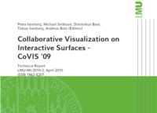

Collaborative Visualization on Interactive Surfaces - CoVIS '09

Venue. CoVIS '09, Workshop at Visweek (2010) Technical Report
Authors. Petra Isenberg, Michael Sedlmair, Dominikus Baur, Tobias Isenberg, Andreas Butz
Materials.
PDF
Abstract. The report comprises interdisciplinary aspects form the fields of information visualization,
scientific visualization, visual analytics as well as CSCW and HCI. It is meant to help other
researchers better understand the role and the growing impact of interactive surfaces as an
emerging technology for supporting collaborative visualization and visual analytics settings.